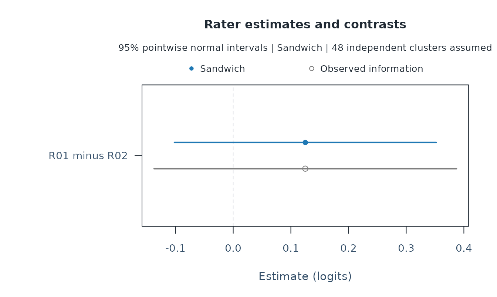
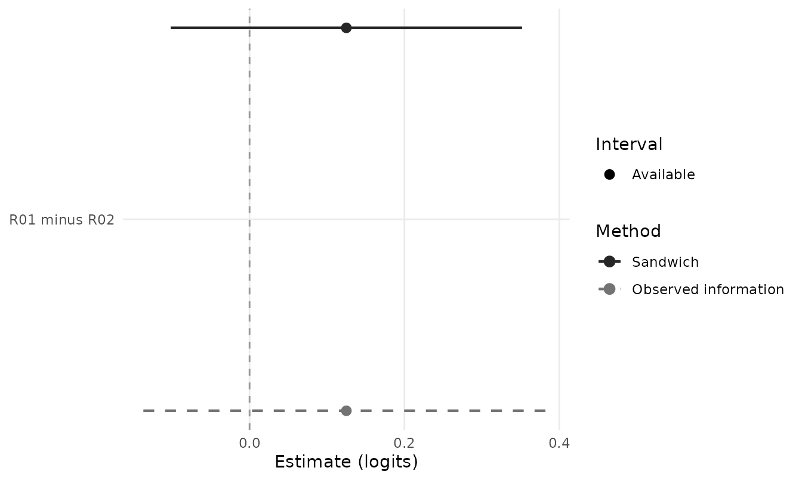

Uncertainty in rater estimates and differences
Source:vignettes/mfrmr-facet-intervals.Rmd
mfrmr-facet-intervals.RmdAn assessment team wants to discuss a difference in severity between two raters. The point estimate answers how large the fitted difference is. Its interval describes uncertainty under specified sampling and model assumptions. Neither a difference nor an interval excluding zero establishes that a rater is scoring incorrectly.
This guide compares two covariance methods for the same fitted estimates. The ordinary method uses the fitted model’s observed information. The sandwich method also uses the variation in likelihood contributions between independent persons, or between explicitly declared larger clusters. It can change interval widths without correcting biased estimates. The example uses fictional ratings.
Fit the model and identify the comparison
library(mfrmr)
ratings <- load_mfrmr_data("example_core")
fit <- fit_mfrm(ratings, "Person", c("Rater", "Criterion"), "Score",
model = "RSM", method = "MML")
ordinary <- mfrm_facet_intervals(fit, "Rater")
summary(ordinary)
#> Target Estimate SE Lower Upper ModelSE ModelLower
#> 1 R01 -0.1838153 0.08209147 -0.34471159 -0.02291895 0.08209147 -0.34471159
#> 2 R02 -0.3088478 0.08298771 -0.47150069 -0.14619486 0.08298771 -0.47150069
#> 3 R03 0.1795027 0.08202273 0.01874108 0.34026428 0.08202273 0.01874108
#> 4 R04 0.3131604 0.08294736 0.15058652 0.47573421 0.08294736 0.15058652
#> ModelUpper Status
#> 1 -0.02291895 available
#> 2 -0.14619486 available
#> 3 0.34026428 available
#> 4 0.47573421 availableThese are RSM marginal maximum likelihood estimates with a fixed standard-normal person distribution. The interval helper also supports PCM in this scope, with unit observation weights and fixed quadrature. It checks the source fit’s inference readiness and refuses singular or regularized observed information. It does not override a fit that needs review.
The default output lists each rater. With the default sum-to-zero constraint, zero is the fitted reference across these raters; a positive value means stricter ratings. To compare R01 with R02, request their difference. Subtracting two estimates requires their covariance. Looking for overlap between their separate intervals does not calculate an interval for that difference.
contrast <- matrix(c(1, -1, 0, 0), nrow = 1,
dimnames = list("R01 minus R02", c("R01", "R02", "R03", "R04")))
difference <- mfrm_facet_intervals(fit, "Rater", contrasts = contrast,
method = "sandwich")
summary(difference)
#> Target Estimate SE Lower Upper ModelSE ModelLower
#> 1 R01 minus R02 0.1250325 0.1157806 -0.1018933 0.3519583 0.1337755 -0.1371626
#> ModelUpper Status
#> 1 0.3872276 availablePositive values mean that R01 is stricter than R02 on this fitted scale, in logits. The named coefficients also support other prespecified linear comparisons. All facet levels must appear as columns, including those with zero coefficients. Columns are matched by name.
Estimate is common to both methods. SE,
Lower and Upper describe the selected method;
ModelSE, ModelLower and
ModelUpper retain the ordinary comparison.
Status reports whether the selected interval is available.
These are pointwise normal intervals, not simultaneous protection for a
set of comparisons. Choosing whichever method gives a preferred
conclusion is not a valid analysis strategy.
plot(difference)
The slight vertical offset distinguishes the methods. Both points have the same horizontal coordinate. The zero line denotes no difference; it is not a threshold of practical importance or a rater-quality rule. Use the size of the difference, interval, rubric and shared rating examples together when giving feedback.
Carry the same intervals into figures and reports
Suppose the assessment team has chosen a rater difference and its interval method. The figure, table and report should describe that same choice. Attach the saved result instead of calculating a new interval during reporting:
results <- mfrm_results(fit, intervals = list(difference = difference),
include = c("fit", "plots"), compute = "never")
apa_table(difference)
#> Fixed-facet uncertainty
#> Target Estimate SE Lower Upper ModelSE ModelLower ModelUpper
#> R01 minus R02 0.13 0.12 -0.1 0.35 0.13 -0.14 0.39
#> Status Facet Method ConfidenceLevel Adjustment
#> available Rater sandwich 95% Pointwise
#> Note. Pointwise normal intervals conditional on the observed facet levels; changing covariance does not correct biased estimates. Fixed and unavailable targets remain present. No rater-quality decision is implied.
plot_data(results, type = "facet_difference", component = "table")
#> Target Estimate SE Lower Upper ModelSE ModelLower
#> 1 R01 minus R02 0.1250325 0.1157806 -0.1018933 0.3519583 0.1337755 -0.1371626
#> ModelUpper Status
#> 1 0.3872276 available
report <- mfrm_report(results)
report$tables$facet_difference_intervals
#> Target Estimate SE Lower Upper ModelSE ModelLower
#> 1 R01 minus R02 0.1250325 0.1157806 -0.1018933 0.3519583 0.1337755 -0.1371626
#> ModelUpper Status Facet Method ConfidenceLevel Adjustment
#> 1 0.3872276 available Rater sandwich 95% PointwiseThe name difference becomes the plot route
facet_difference. A single unnamed result,
intervals = difference, uses facet_inference.
Several named results can retain different facets, confidence levels or
prespecified contrasts. They must all come from the same fitted
analysis. A mismatch in data, fitted parameters, constraints, population
or integration settings is rejected. An ordinary comparison interval
remains separate from the selected sandwich interval, including when the
latter is unavailable.
as_ggplot(results, type = "facet_difference", title = NULL, subtitle = NULL,
preset = "monochrome")
plot(results, type = "facet_difference") uses base
graphics; as_ggplot() supports further ggplot
customization. Both use the saved values. title = NULL,
subtitle = NULL, caption = NULL,
reference = NULL and show_legend = FALSE omit
the corresponding display parts without changing the stored interval
method, level or status. Keep those details in the figure legend or
accompanying text when publishing a minimal figure. Shape cues retain
unavailable and fixed targets.
summary(results)$reproducible_code shows how to save the
complete result and reload it later. In that code, res
denotes your result object: use res <- results for this
example and choose the file path before saving. Reloading preserves the
attached intervals; reconstructing results from fit alone
would omit them.
export_mfrm_results(results, ...) includes the selected
tables and figures. With preset = "starter", its
index.html also links the saved interval figures and
describes their methods and confidence levels. When replay is requested,
it also saves the RDS and a script that reloads it; replay does not
refit the model or recalculate covariance. The settings, contrast
coefficients and cluster mapping are retained alongside the interval
table. These saved objects contain fitted data and participant
identifiers; follow the export function’s data-handling guidance before
sharing them.
This route also works for PCM, whose step structure is declared when fitting:
fit_pcm <- fit_mfrm(ratings, "Person", c("Rater", "Criterion"), "Score",
model = "PCM", step_facet = "Criterion", method = "MML")
pcm_difference <- mfrm_facet_intervals(fit_pcm, "Rater", contrasts = contrast,
method = "sandwich", level = 0.90)
pcm_results <- mfrm_results(fit_pcm, intervals = list(difference = pcm_difference),
include = c("fit", "plots"), compute = "never")
apa_table(pcm_difference)
#> Fixed-facet uncertainty
#> Target Estimate SE Lower Upper ModelSE ModelLower ModelUpper
#> R01 minus R02 0.13 0.12 -0.07 0.32 0.13 -0.09 0.35
#> Status Facet Method ConfidenceLevel Adjustment
#> available Rater sandwich 90% Pointwise
#> Note. Pointwise normal intervals conditional on the observed facet levels; changing covariance does not correct biased estimates. Fixed and unavailable targets remain present. No rater-quality decision is implied.RSM and PCM estimate facet locations while holding discrimination
fixed; GPCM slope intervals concern a different target. Attaching a
fixed-facet interval does not replace the uncertainty in an ordinary
Wright map, alter Infit/Outfit, or provide uncertainty for individual
Person scores. Use the facet_ route when you want to
display the attached covariance method.
Declare what can be treated as independent
By default, all responses from one person form one sampling unit. A person rated many times does not provide that many independent units. The software first sums their likelihood contributions, then forms the sandwich covariance. Repeated performances by the same person should not be treated as independent merely because they were entered under different IDs.
If persons share a school, clinic or other source of dependence, and those larger clusters can reasonably be treated as independent of one another, supply a person-to-cluster mapping. This fictional mapping only demonstrates the syntax: it is not evidence that the example contains actual schools.
persons <- sort(unique(ratings$Person))
schools <- data.frame(Person = persons,
Cluster = rep(sprintf("School%02d", 1:16), each = 3))
school_difference <- mfrm_facet_intervals(
fit, "Rater", contrasts = contrast, method = "sandwich", clusters = schools
)
school_difference$settings[c("persons", "clusters", "cluster_score_rank")]
#> $persons
#> [1] 48
#>
#> $clusters
#> [1] 16
#>
#> $cluster_score_rank
#> [1] 8
summary(school_difference)
#> Target Estimate SE Lower Upper ModelSE ModelLower
#> 1 R01 minus R02 0.1250325 0.1236645 -0.1173455 0.3674105 0.1337755 -0.1371626
#> ModelUpper Status
#> 1 0.3872276 availableEvery fitted person must appear exactly once. Use the column names
Person and Cluster in this mapping even if the
original data use different names. The number of independent clusters,
rather than the number of rating rows, governs the large-sample
approximation. Sixteen schools in this illustration are not a
recommendation or a demonstrated sufficient sample size.
adjust = TRUE multiplies the covariance by
G/(G-1), where G is the number of independent
clusters. This simple scaling does not supply a small-sample guarantee
or change the normal reference distribution. It is off by default. The
user must justify the independence assumption; supplying a mapping does
not establish it.
Keep unavailable results visible
When cluster likelihood scores do not span the free-parameter space, the selected sandwich interval is unavailable. The estimate and ordinary comparison remain visible. A fixed anchor has an exact supplied value and no inferential interval; its uncertainty is outside this calculation.
two_groups <- schools
two_groups$Cluster <- rep(c("A", "B"), each = 24)
unavailable <- mfrm_facet_intervals(
fit, "Rater", contrasts = contrast, method = "sandwich", clusters = two_groups
)
summary(unavailable)[, c("Target", "Estimate", "Lower", "Upper", "Status")]
#> Target Estimate Lower Upper Status
#> 1 R01 minus R02 0.1250325 NA NA insufficient_cluster_rankIncreasing the cluster count until this numerical restriction disappears does not establish coverage. A small number of clusters can still yield poor intervals. In plots, a cross marks an unavailable selected interval and an open diamond marks a fixed target. An ordinary comparison interval is never used to replace a missing sandwich interval.
Understand what the sandwich can and cannot address
With many independent units and the required regularity, a sandwich covariance describes variation around the parameter targeted by the fitted working model. If that model is misspecified, this pseudo-true parameter can differ from the generating rater severity. For example, a strongly skewed ability distribution can change the limiting rater difference when the fit insists on a standard normal distribution. Altering the standard error does not remove that shift.
Sparse assignment also needs substantive review. An unassigned rating
is not a missing score to fill in; selective assignment can confound
rater differences with population differences. Nonresponse depending on
an unobserved score is another modeling problem. None of these problems
is solved solely by selecting method = "sandwich".
The intervals condition on the observed fixed raters
and other facets. They do not describe replacing raters with new draws
from a rater population. If shared random rater or task effects span the
declared clusters, this one-way independence assumption is
inappropriate. The method is not a multiway crossed-cluster estimator.
G/D-study planning, variance-component boundaries, EAP person-score
uncertainty and multiple-imputation pooling require their own methods.
In particular, pool_mfrm_imputed() continues to use its
documented within-imputation model covariance; this helper does not
change that workflow.
Review quadrature sensitivity separately. The interval helper reuses the fitted integration grid and does not refit the model.
What the bounded simulation showed
A comparison used RSM and PCM, 80 or 320 independent persons, three fixed raters, two criteria and scores from 0 to 2. Each of the eight conditions had 200 independently generated datasets. One scenario used standard-normal ability and six ratings per person. The other combined standardized lognormal ability with three ratings per person; assignment was independent of ability and responses. Thus the second scenario challenges both distribution and design together, without isolating their separate effects.
The comparison evaluated three rater differences and one criterion difference on each same fitted dataset. All 1,600 datasets returned both interval methods. The entries below are ranges across conditions and contrasts, not pooled coverage estimates or confidence bounds. All intervals had a nominal 95% level.
| Scenario and reference target | Observed information | Sandwich |
|---|---|---|
| Matched normal model: generating truth | 92.0–98.0% | 92.5–98.0% |
| Skewed ability and sparse assignment: generating truth | 84.5–95.0% | 87.0–95.5% |
| Skewed ability and sparse assignment: working-model target | 90.0–97.5% | 93.0–97.5% |
For example, in the 320-person RSM scenario with skewed ability and sparse assignment, the sandwich covered the generating criterion difference in 87.0% of datasets (95% Monte Carlo interval: 81.5–91.3%). Coverage of the independently calculated working-model target was 96.0% (92.3–98.3%). The same estimates and intervals produced these different answers because the two target values differ. For the R1–R3 difference in the corresponding 320-person PCM scenario, generating-truth coverage was 90.0% (85.0–93.8%). Rater comparisons are therefore subject to this limitation too.
With 200 datasets per condition, Monte Carlo standard error near 95% coverage is about 1.54 percentage points. These results do not demonstrate uniform improvement or a guarantee of nominal coverage. Schools, few independent clusters, shared random raters, informative assignment and nonresponse were not evaluated by this simulation.
Save the analysis and use the plotted data
saved <- tempfile(fileext = ".rds")
saveRDS(difference, saved)
restored <- readRDS(saved)
summary(restored)
#> Target Estimate SE Lower Upper ModelSE ModelLower
#> 1 R01 minus R02 0.1250325 0.1157806 -0.1018933 0.3519583 0.1337755 -0.1371626
#> ModelUpper Status
#> 1 0.3872276 available
plotted <- plot(restored, draw = FALSE)
plot_data(plotted)$table
#> Target Estimate SE Lower Upper ModelSE ModelLower
#> 1 R01 minus R02 0.1250325 0.1157806 -0.1018933 0.3519583 0.1337755 -0.1371626
#> ModelUpper Status
#> 1 0.3872276 availableThe saved result retains the estimates, covariance matrices,
likelihood scores, cluster mapping, contrasts, settings and source fit.
Printing or plotting it does not fit the model again. Use
write.csv(result$table, "intervals.csv", row.names = FALSE)
to export a table, and keep the RDS result for its context. Use
plot_data() for custom graphics; automatic
as_ggplot() conversion is not provided for these method
comparisons.
References
The sandwich construction follows the estimating-function framework described by Zeileis (2006). Zeileis, Koell and Graham (2020) discuss clustered covariance estimators and their distinctions. These references support the covariance framework; they do not establish finite-sample accuracy for every MFRM design.